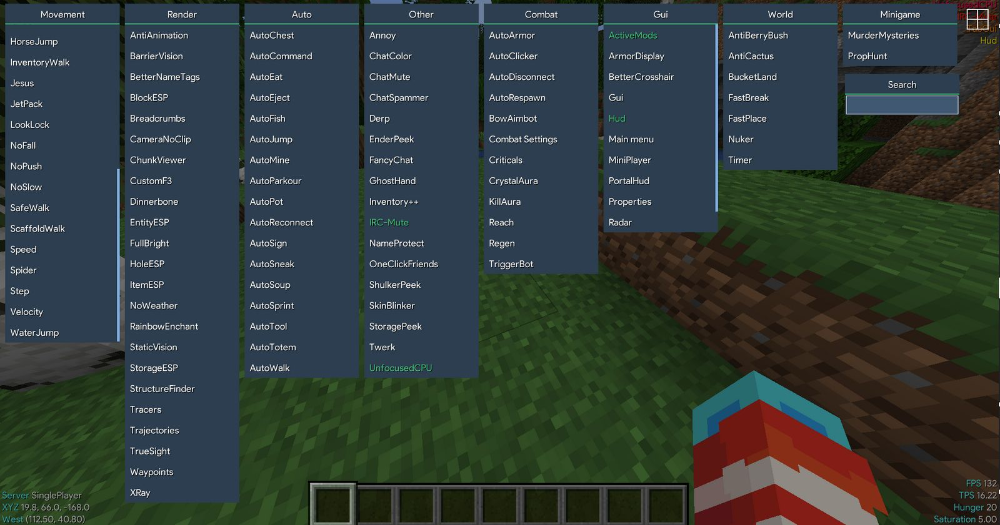

Aristois Client is an easy to use client with over 120 mods. It comes action packed with an Alt Manager, Forge and Injection compatability, and an easy to use installer! Aristois comes pre-loaded with TheAltening alt manager!
Use Right Shift to open the ClickGUI. To navigate the TabGUI use the arrows and use the Enter key to activate or deactive the mod.
Movement:
- AirJump
- AntiAFK
- BHop
- Blink
- BunnyJump
- ElytraFlight
- EntityFlight
- FastBridge
- FastLadders
- FishMode
- Flight
- Freecam
- Glide
- HorseJump
- InventoryWalk
- Jesus
- JetPack
- LookLock
- NoFall
- NoPush
- NoSlow
- SafeWalk
- ScaffoldWalk
- Speed
- Spider
- Step
- Velocity
- WaterJump
Render:
- AntiAnimation
- BarrierVision
- BetterNameTags
- BlockESP
- Breadcrumbs
- CameraNoClip
- ChunkViewer
- CustomF3
-Dinnerbone
- EntityESP
- FullBright
- HoleESP
- ItemESP
- NoWeather
- RainbowEnchant
- StaticVision
- StorageESP
- StructureFinder
- Tracers
- Trajectories
- TrueSight
- Waypoints
- XRay
Auto:
- AutoChest
- AutoCommand
- AutoEat
- AutoEject
- AutoFish
- AutoJump
- AutoMine
- AutoParkour
- AutoPot
- AutoRonnect
- AutoSign
- AutoSneak
- AutoSoup
- AutoSprint
- AutoTool
- AutoTotem
- AutoWalk
Combat:
- AutoArmor
- AutoClicker
- AutoDisconnect
- AutoRespawn
- BowAimbot
- Combat Settings
- Criticals
- CrystalAura
- KillAura
- Reach
- Regen
- TriggerBot
World:
- AntiBerryBush
- AntiCactus
- BucketLand
- FastBreak
- FastPlace
- Nuker
- Timer
Minigames:
- MurderMysteries
- PropHunt
Gui:
- ActiveMods
- ArmorDisplay
- BetterCrosshair
- Gui
- Hud
- Main menu
- MiniPlayer
- PortalHud
- Properties
- Radar
World:
- AntiBerryBush
- AntiCactus
- BucketLand
- FastBreak
- FastPlace
- Nuker
- Timer